Actori de televiziune
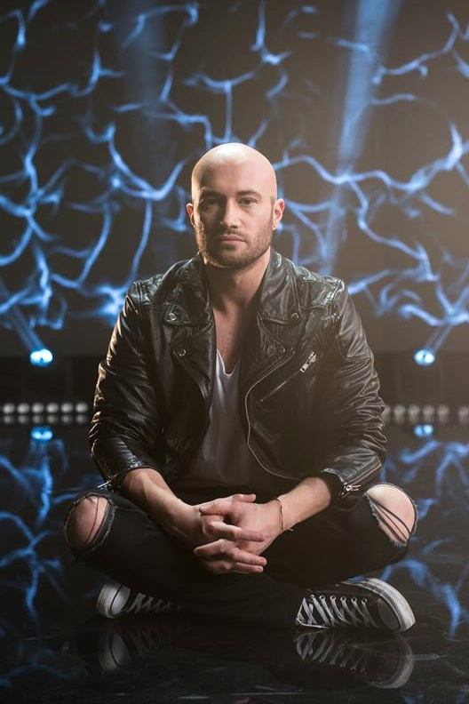
Mihai Bendeac
7.6
Mihai Bendeac s-a născut la data de 16 februarie 1983 și a studiat la "Universitatea Națională de Artă Teatrală și Cinematografică".
Este sub semnul zodiacal vărsător și la vârsta de 27 de ani se poate lăuda cu talentul său de a imita unele celebrități precum
Traian Băsescu, Ștefan Bănică jr. și Bănel Nicoliță și serialul TV Mondenii. A copilărit în capitala noastră și încă de la o
vârstă fragedă și-a dorit să devină un fotbalist renumit, deși nu a făcut niciodată sport de performanță.
În anul 2005 a primit premiul de interpretare precum și premiul special, la Gala Absolvenților. Festivalul de Teatru Clasic Arad 2005
i-a adus premiul pentru cel mai bun actor în rol secundar, urmat, mai apoi, de premiul pentru cel mai bun actor într-un rol principal,
obținut la Festivalul Internațional Hyperion 2005 și 2006.
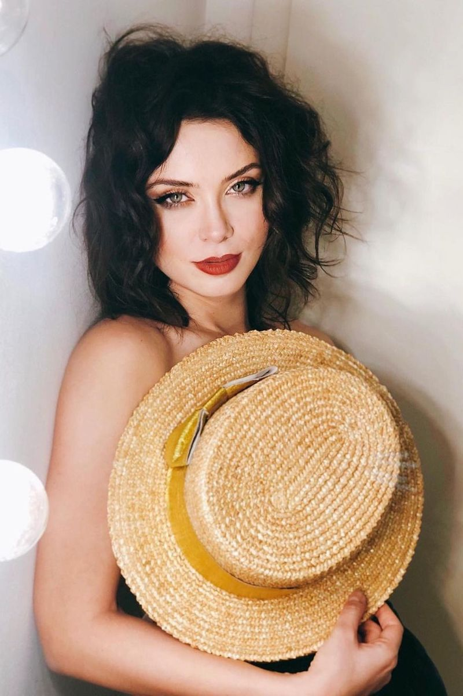
Anca Dumitra
8.7
Anca s-a născut în Craiova și traieste în București din 2006, când a intrat la Facultatea de actorie. E drept că lumea a început să
audă de ea abia după ce a apărut în “Las Fierbinți”, dar spune că n-a stat degeaba în așteptarea celebrității.
A făcut patru ani de balet, și-a încercat norocul în modelling și a-nceput să joace în piese de teatru încă din liceu,
ca mai apoi, în facultate, să apară în scurtmetraje studențești și în lungmetrajul “Copilăria lui Icar”. Spune că rolul Gianinei
e o provocare pentru ea, fiindcă e greu să interpretezi o tânără “în totalitate naivă, credulă până la idioțenie”, dar serialul în sine
e o distracție pentru toți actorii.
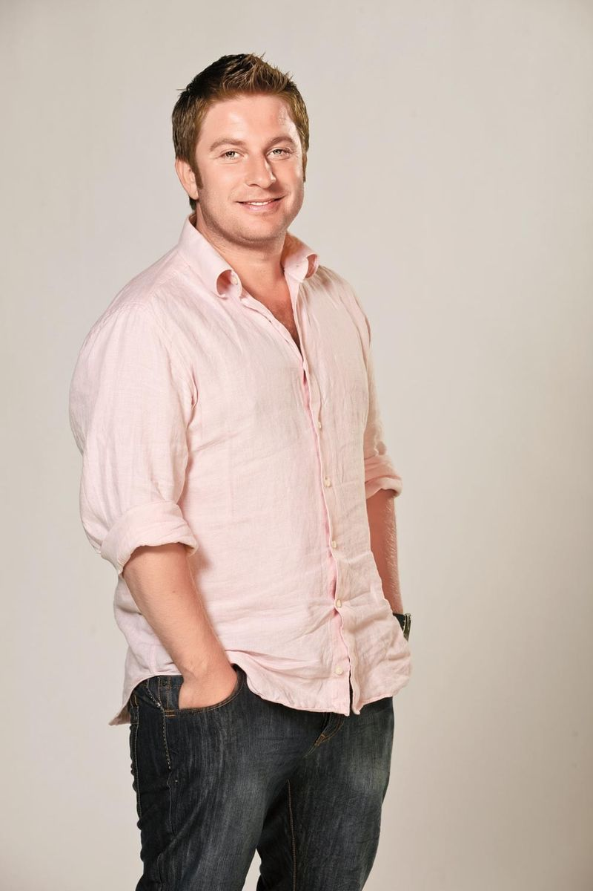
Pavel Bartoș
8.0
Pavel Bartoș a urmat Facultatea de Teatru / Universitatea " Babeș - Bolyai" din Cluj, clasa profesor universitar Marius Bodochi,
și după terminarea facultății este repartizat la Teatrul de păpuși "Puck" din Cluj (1993-1994). Ocupă apoi un loc în
trupa Teatrului Național din Cluj , și a Teatrului de Nord din Satu Mare iar în 1999 obține prin concurs un post de actor la
Teatrul Național din Timișoara și la Teatru Maghiar de Stat "Csicky Gergely" și colaborează cu Opera Română din Timișoara.
În 2001 este acceptat în trupa Teatrului "Odeon" din București și începe colaborarea cu televiziunea, la început prin reclame
și spoturi publicitare, apoi prin participarea la diverse emisiuni de divertisment, prezentator matinal / TVR 1
Bună Dimineața România (2002-2003), coprezentator la emisiunea PRO Tv Căsătorie în direct etc.
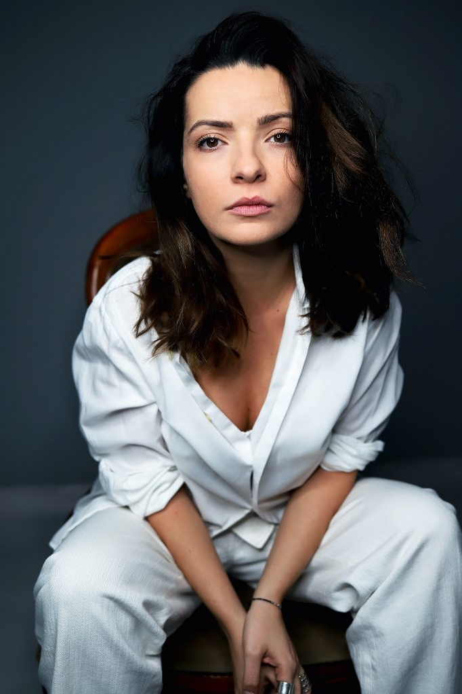
Anca Dinicu
8.0
Anca Dinicu s-a născut la 9 decembrie 1989, la București. Părinții ei se numesc Constantin și Mariana.
A făcut studiile la Liceul Teoretic „Elena Cuza”. După terminarea liceului a urmat Facultatea de Artă Teatrală și Cinematografică
„I. L. Caragiale” și are un master în Arta Actorului, la aceeași facultate.
A debutat la TV la vârsta de opt ani într-un scheci cu doamna Stela Popescu la Televiziunea Română, iar în teatru, în 2012,
în spectacolul „Boeing-Boeing”. Cu primii bani câștigați și-a cumpărat rechizite. Pasiunile sale sunt pictura pe sticlă,
călătoriile și pescuitul.
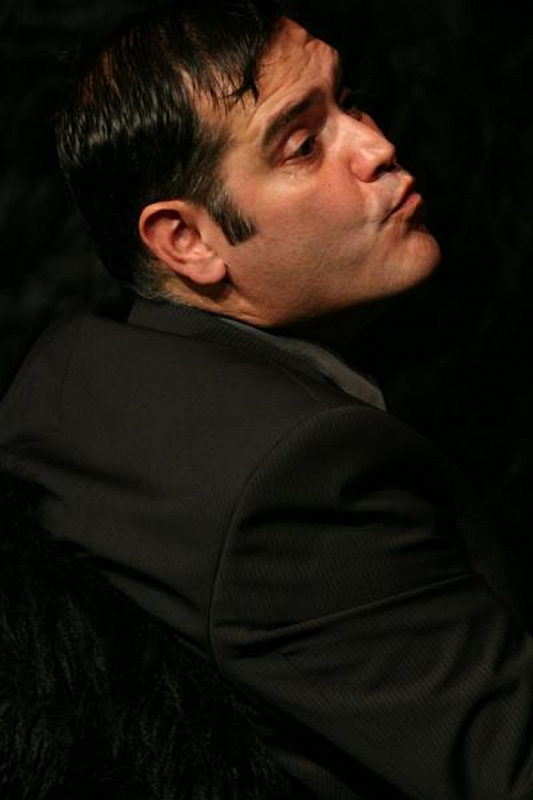
Gheorghe Ifrim
8.5
S-a născut pe 18 decembrie 1971. Absolvent al Academiei de Teatru și Film București,
Facultatea de Teatru, Specializarea Actorie, promoția 1997, clasa prof. Gelu Colceag.
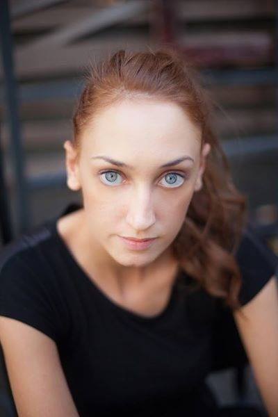
Ilona Brezoianu
8.0
Absolventă a Universității Naționale de Artă Teatrală și Cinematografică ”IL Caragiale”, Actorie,
clasa prof. Adrian Titieni (2013). Masterat Arta actorului UNATC, clasa prof.Gelu Colceag (2015).
Actriță la Teatrul de Comedie (din 2017), Teatrul Luni, Godot Cafe Teatru, colaborator la Teatrul Național ”IL
Caragiale” din București.
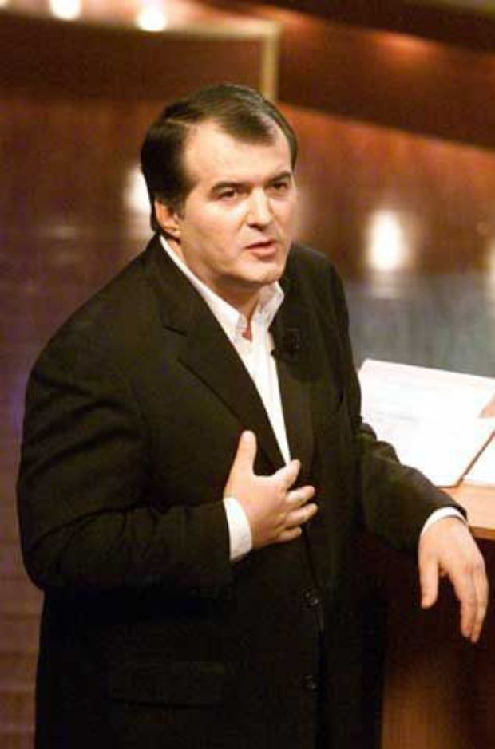
Florin Călinescu
5.8
Născut pe 29 aprilie 1956 actorul a fost mult apreciat pentru rolurile lui din teatru și film. A terminat Institutul de Artă teatrală
și Cinematografică "Ion Luca Caragiale" și a debutat în film în 1981 în drama "Lumini și umbre". După evenimentele din 1989 a fost
realizatorul multor emisiuni Tv. A intrat în politică candidând pentru postul de senator din partea PNL, a devenit directorul
Teatrului Mic, 2005 și în 2007, actorii Teatrului Mic l-au acuzat pe regizor că a adus pe scena teatrului „modelul Vacanța Mare“
prin montarea piesei „Război cu Troia nu se face“ și au cerut demiterea lui Florin Călinescu.
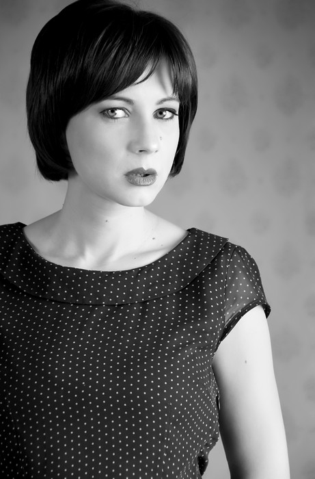
Mirela Oprișor
8.1
Mirela Oprișor este actriță la Teatrul de Comedie din București. A absolvit Universitatea Națională de Artă Teatrală și Cinematografică
Ion Luca Caragiale din București în anul 2000, la clasa profesorului Florin Zamfirescu.
S-a angajat la Teatrul de Comedie după terminarea facultății, dar a rămas într-un con de umbră în perioada în care s-a născut fiica ei.
Rolul care a readus-o în atenția publicului și a regizorilor este cel al Adrianei Hanganu din filmul „Marți, după Craciun”,
regizat de Radu Muntean. Pentru acest rol a primit și Premiul pentru cea mai bună actriță la Festivalul de Film de la Sarajevo.
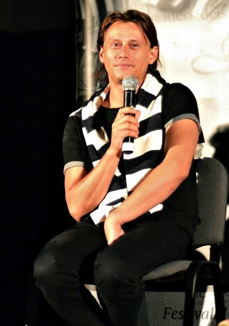
Marius Manole
8.5
Marius Manole (n. 4 octombrie 1978, Iași) este un actor român, în prezent (2009) angajat la Teatrul Național „Ion Luca Caragiale”
din București. Marius Manole a absolvit Academia de Arte George Enescu, Iași, secția Actorie, promoția 2001, clasa profesor
Emil Coșeriu și Universitatea Națională de Artă Teatrală și Cinematografică, secția Coregrafie, promoția 2002 - 2003.
A urmat stagii la Academia Itinerantă Andrei Șerban, la Horezu și la New York, atelier realizat de ICR New York cu sprijinul
ICR București, 2009.
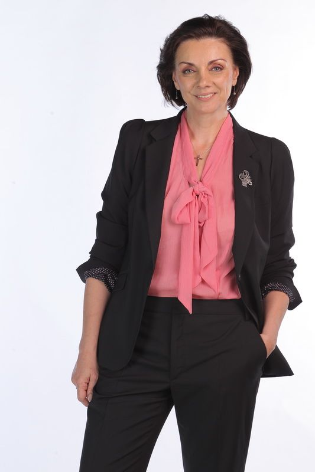
Carmen Tănase
7.9
Carmen Tanase s-a născut in 18 ianuarie 1961, la Ploiești, sub zodia Capricorn (cu ascendent în Leu). Carmen a urmat cursurile
Liceului Pedagogic din Ploiești și, între anii 1980-1984, pe cele ale Institutului de Artă Teatrală și Cinematografică din București,
secția Actorie, la clasa Olgăi Tudorache. A fost colegă de promoție cu Oana Pellea, Radu Duda (devenit intre timp Alteța,
principe de Hohenzollern-Veringen), Carmen Ciorcila, Carmen Trocan, Bogdan Gheorghiu, Marina Procopie, Mihai Verbitchi,
Adrian Păduraru, Dan Badarau etc. A rămas foarte atașată de profesoara sa din facultate, Olga Tudorache.
Între 1984 și 1990, Carmen Tănase a fost actriță la Teatrul Național "Vasile Alecsandri" din Iași, iar din 1990 este actrță la Teatrul Odeon, din București.
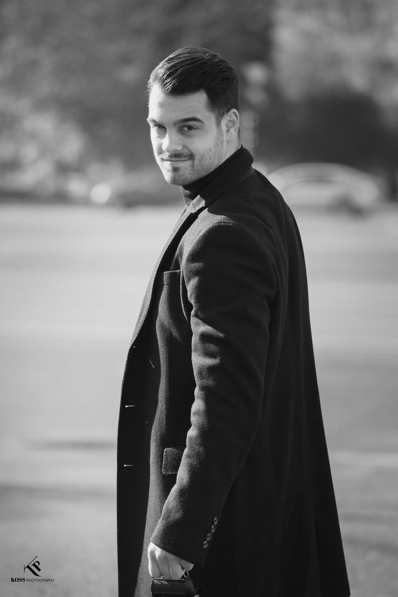
George Piștereanu
8.1
A absolvit liceul Dinu Lipatti, secția actorie, și Universitatea Națională de Artă Teatrală și Cinematografică (UNATC).
A cunoscut recunoașterea națională și internațională după ce a interpretat rolul lui Silviu din Eu când vreau să fluier, fluier,
filmul lui Florin Șerban premiat la festivalul de film de la Berlin cu Ursul de Argint în 2010.
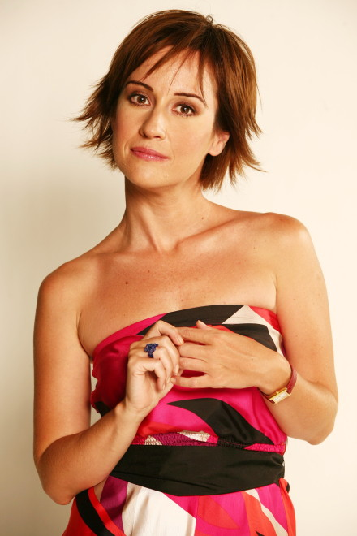
Medeea Marinescu
7.9
Împreună cu cele două surori gemene, Medeea Marinescu face parte dintr-o familie de cineaști și din această cauză poate spune că
s-a născut pe platoul de filmare și întreaga copilarie și-a petrecut-o la Buftea între aparate de filmat, reflectoare și decoruri.
La trei ani debutează în film în comedia "Iarna bobocilor" și devine alaturi de interpreta Veronicăi, Lulu Mihăescu, și interpretul
Pistruiatului, Costel Băloiu, unul din copiii minune ai filmului românesc care, spre deosebire de ceilalți, odată cu trecerea anilor,
nu s-a pierdut în uitare ci este una dintre cele mai apreciate actrițe de teatru și film din generația ei.